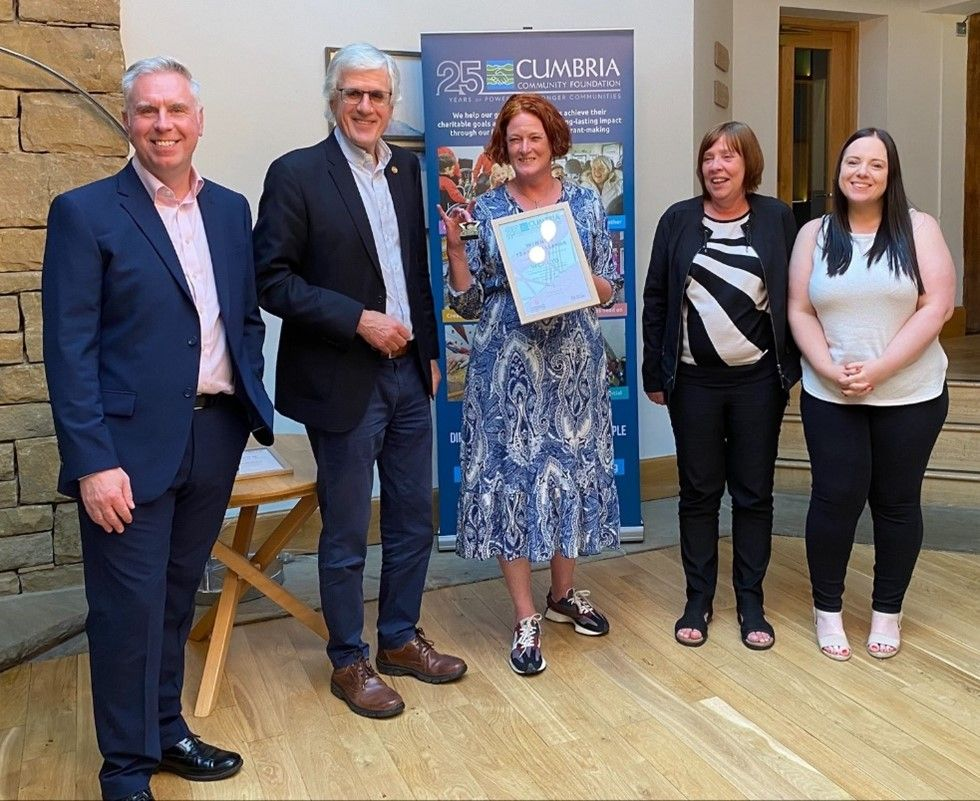
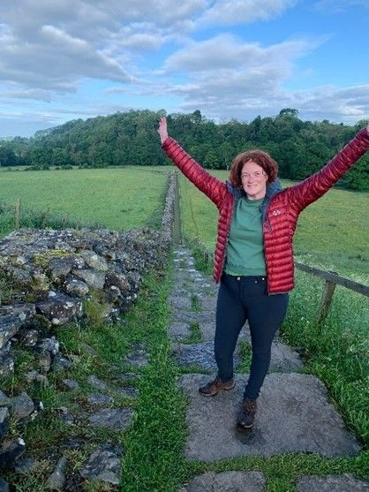
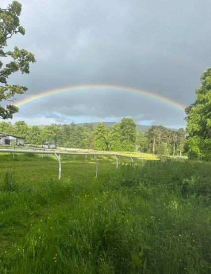
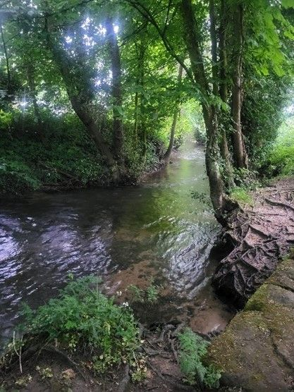
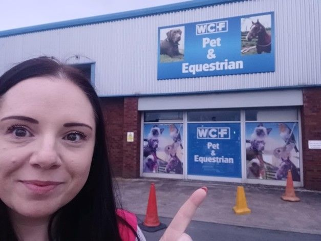
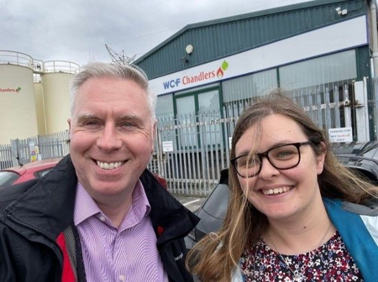
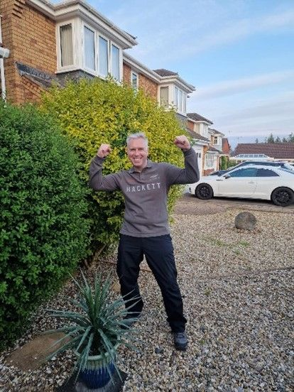
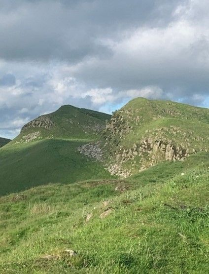
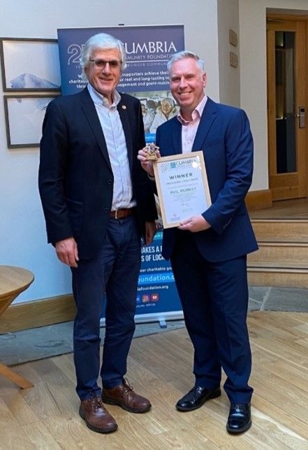
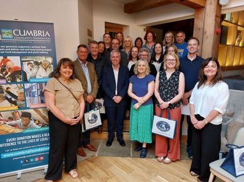

The “WCF Warriors” Conquer Virtual Coast-to-Coast Challenge for Cumbria Community Foundation
This summer, members of the WCF executive team embarked on a journey to support our local community. In celebration of the Cumbria Community Foundation’s 25th anniversary, the team took on the challenge of a Virtual Coast-to-Coast, aiming to raise funds to support communities across Cumbria. Aptly named the “WCF Warriors”, the team worked tirelessly to individually complete the 171-mile trek over a six-week period.
The Challenge
The Coast-to-Coast Walk is one of the UK’s most beloved long-distance trails, stretching from the Irish Sea at St Bees Head, across the stunning landscapes of northern England, to the North Sea at Robin Hood’s Bay. This iconic route passes through the heart of Cumbria, showcasing the county’s breath-taking scenery and rich heritage. While the traditional walk is a physical journey, the Virtual Coast-to-Coast allows participants to complete the distance in any location and at their own pace, making it accessible and inclusive.
Meet the WCF Warriors
Our team consisted of five members, Jo Ritzema, Managing Director, Phil Murray, Deputy Managing Director, Pam Murray, Head of Finance, Pam’s daughter Leah, and me, Karen Kelso, Head of People & Culture.
Together, we were united in our commitment to give back to our local community, and in helping each other to succeed (with a healthy dose of competition thrown in!). The challenge reinforced the importance of collaboration, camaraderie, and celebrating success — principles that are at the core of WCF.

The Journey
We all had to walk, run, swim or static-cycle our way to the 171-mile goal, and despite our busy schedules, we found the time to complete well within the six-week window, often finding creative ways to integrate the challenge into our daily routines.







Impact and Fundraising
Our efforts were not just about completing miles; they were about making a tangible difference. Through the challenge, the WCF Warriors raised an impressive £2500 for the Cumbria Community Foundation. These funds will support various projects and initiatives aimed at improving the lives of people in our local communities, addressing issues such as poverty, education, health, and wellbeing.
Of the 135 participants who signed up to take part in the challenge, we are proud to share that the WCF Warriors were the first team to complete the distance.
Special congratulations go to Phil, who was the first participant to finish overall.

In total, the participants of the Virtual Coast-to-Coast challenge collectively covered the equivalent distance from Cumbria to the South Pole and back! This staggering feat underscores the power of community and collaboration, and by coming together for a common cause, we can all play a pivotal role in supporting and uplifting our local communities.

Not only did this challenge allow us to support a worthy cause, it also brought us closer as a team. We are immensely proud of our accomplishment and grateful for the opportunity to contribute to the Cumbria Community Foundation’s mission. A big thank you to everyone who supported the WCF Warriors and the Cumbria Community Foundation.